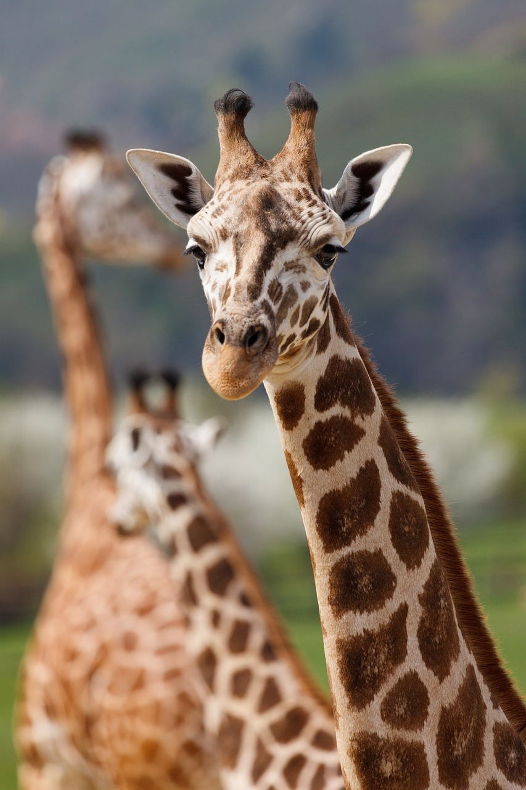
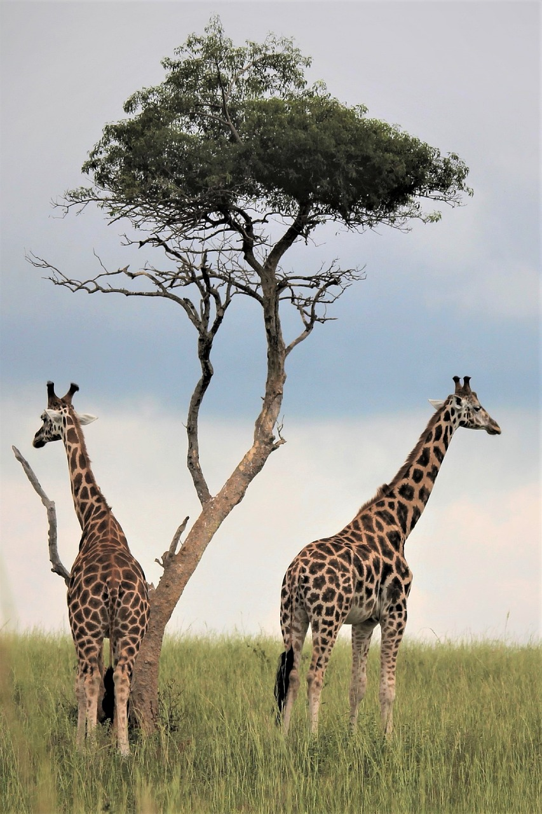
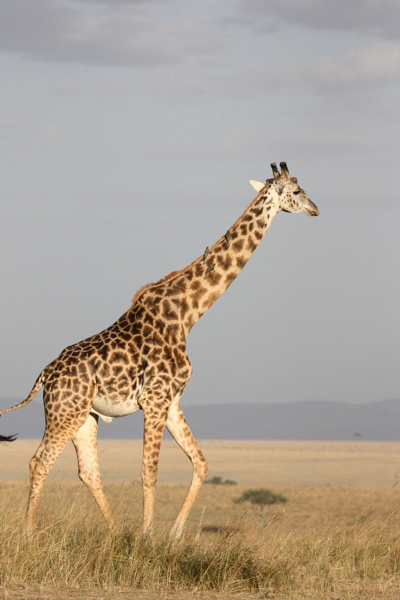
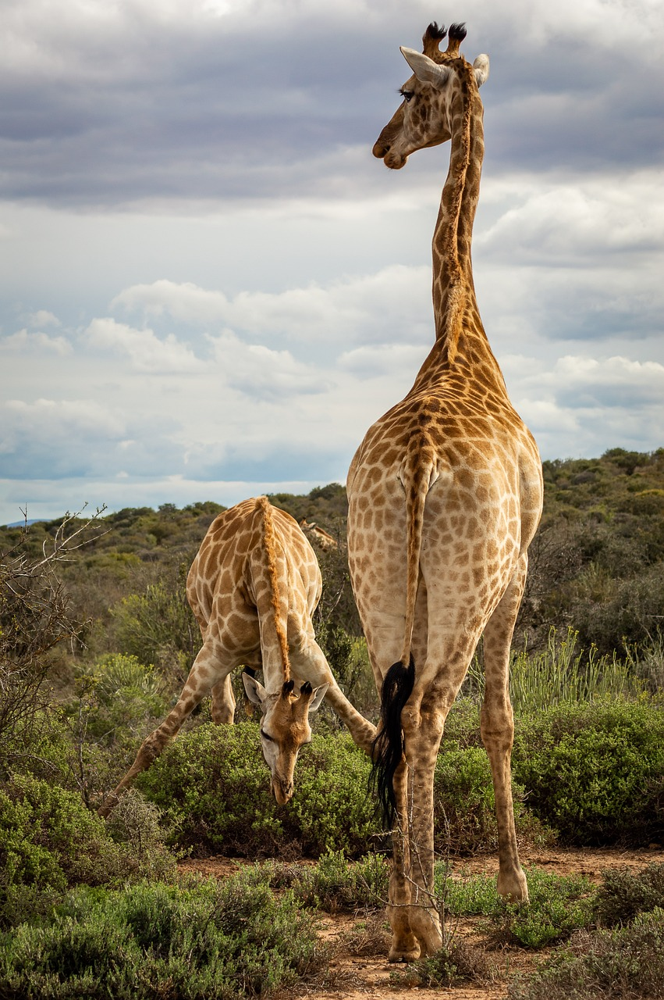
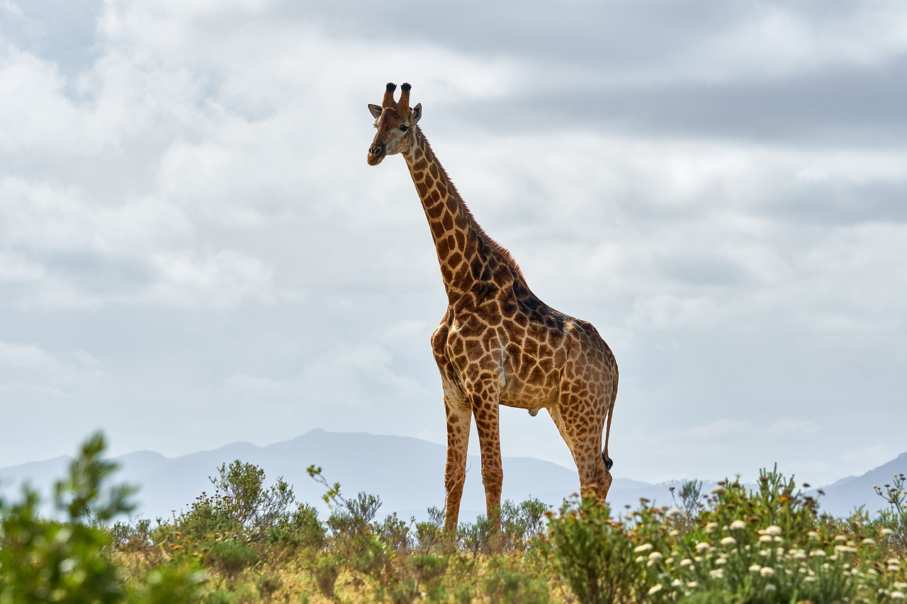
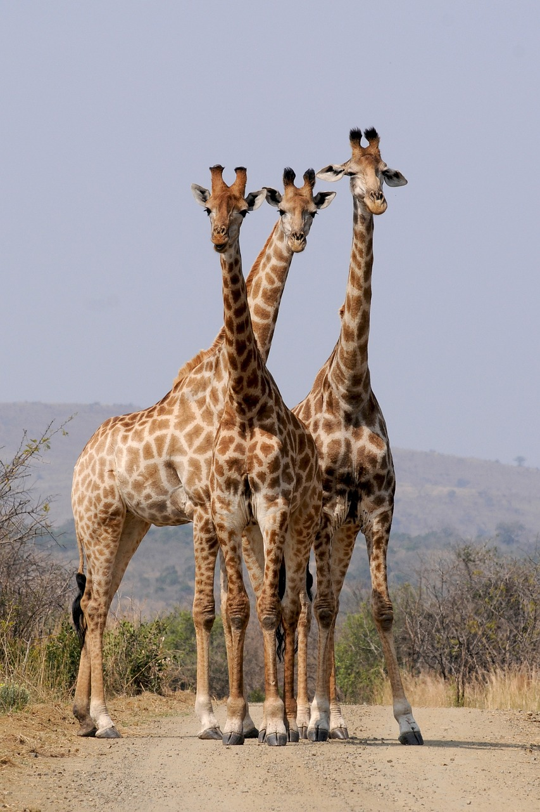
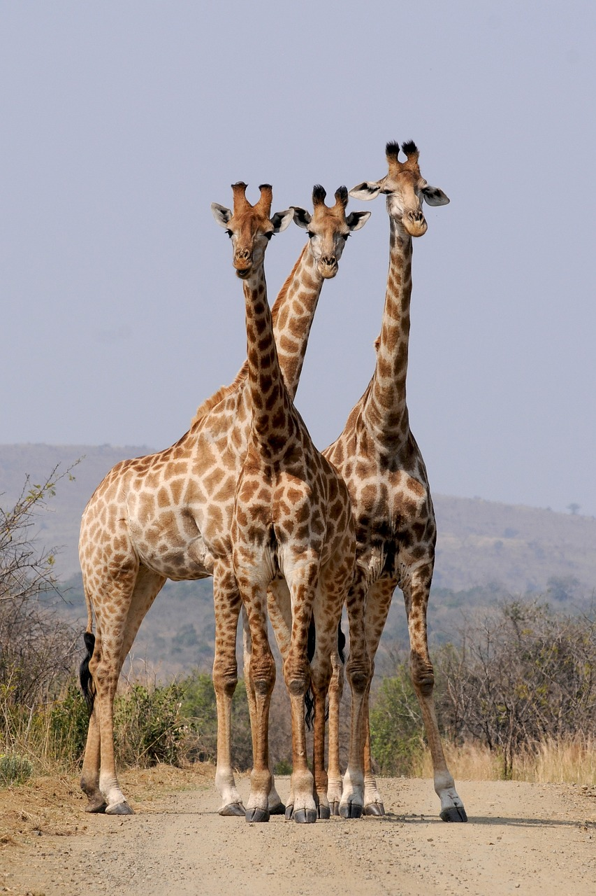

GIRAFFES
-





 

The giraffe, with its towering height and distinctive long neck, is an iconic symbol of the African savannah. Known for being the tallest land animal on Earth, giraffes can reach heights of up to 18 feet, allowing them to browse leaves from the tops of trees that other herbivores cannot reach. Their long necks are comprised of only seven vertebrae, just like humans, but each vertebra can be up to 10 inches long. Despite their remarkable stature, giraffes have a gentle demeanor and are often observed peacefully grazing among the acacia trees. Their unique spotted coat pattern serves as camouflage in their habitat, providing protection against predators such as lions and hyenas.